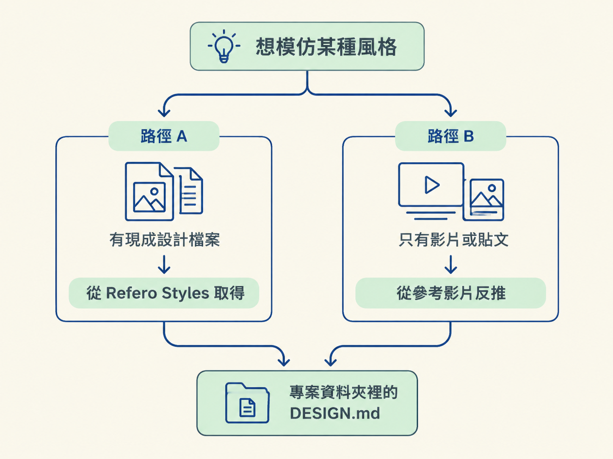
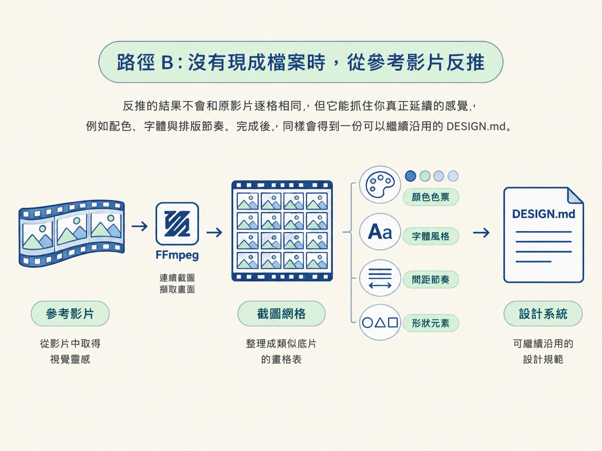

影片製作流程就像蓋房子：上一節先提醒你，沒有設計系統，最後做出來的影片很容易像通用的 AI 樣板；這一節則是先把「外觀規格表」準備好。完成後，專案資料夾裡會有一份 DESIGN.md，裡面記錄影片要遵循的顏色、字體、間距、形狀與元件規則。
動手前只需要兩樣東西：一個存放影片的專案資料夾，以及一個能讀寫檔案的 agent。你不必從零設計品牌，大多數情況可以先挑一套現成設計系統；如果找不到合適的檔案，也能從參考影片反推出一套。
這一步的驗證結果很簡單：DESIGN.md 已經存進專案，而且 agent 列出了主要顏色與字體，讓你確認抓到的是正確風格。
先判斷你想模仿的風格有沒有現成的設計檔案：
兩條路最後都會得到同一個成果：專案資料夾裡有一份 DESIGN.md。以下依序操作。

Refero Styles（styles.refero.design）是一個免費資源，將兩千多套真實品牌網站的設計系統整理成 AI agent 可以讀取的格式。你可以先瀏覽網站，挑一套喜歡的風格，再照著以下四步做：
DESIGN.md 存進專案資料夾。下面是可以直接使用的 prompt。只有中括號裡的網址需要換成你挑的風格，其餘內容可以照貼：
grab a ready-made design system from Refero Styles and save it as the look for my videos.
Refero Styles (https://styles.refero.design) is a free library of brand design systems
written for AI agents.
- the style i picked: [paste your style's link, e.g. Duolingo:
https://styles.refero.design/style/7088d695-362b-4e09-b325-fa8136d4f350]
- open that page and take its DESIGN.md - the colours, fonts, spacing, shapes, components
and do's and don'ts
- save it in my project folder as DESIGN.md, word for word
- if you can't open the page, say so and i'll click Copy.md on it and paste it in here
- once it's saved, show me the main colours and fonts so i know you got the right one
don't change the brand's rules. this file is the look my videos use from now on.這段 prompt 的重點，是請 agent 把來源、存檔方式與確認流程都鎖清楚，而不是隨便整理一份風格。
save it in my project folder as DESIGN.md, word for word：要求一字不改地存進專案。設計系統是一套規則，若擅自「優化」，可能會破壞原本的比例與用色。if you can't open the page, say so and i'll click Copy.md：這是備援方案。若 agent 無法開啟網頁，它應該停下來告訴你；接著你可以按頁面上的「Copy.md」，再把內容貼給它，而不是讓它自行猜測。show me the main colours and fonts：這是一個確認關卡。存檔後請 agent 列出主要顏色與字體，確認它取得的是你挑的那一套。don't change the brand's rules：再次明確要求不要修改品牌規則。從這一步開始，這份檔案就是影片外觀要遵循的標準。如果你喜歡的風格只出現在某段影片或貼文裡，對方沒有提供設計檔案，也沒有可直接使用的 prompt，仍然可以交給 agent 分析。
做法是提供影片連結，請 agent 使用 FFmpeg，在影片中連續截圖，再把畫格排成一張像底片沖印表的網格圖，也就是 contact sheet。FFmpeg 是一套開源影音工具，適合自動處理截圖、裁切與轉檔等工作。你可以使用下面這段請託：
watch this reference video and build a design system from it: [link]
- use FFmpeg to take screenshots across the clip and lay them out as a contact sheet
- from the frames, pull the colours, fonts, spacing and shapes into a DESIGN.md
- save it in my project folder as DESIGN.md, and show me the main colours and fonts反推的結果不會和原影片逐格相同，但它能抓住你真正想延續的感覺，例如配色、字體與排版節奏。完成後，同樣會得到一份可以繼續沿用的 DESIGN.md。

無論選哪條路，先確認專案資料夾裡真的出現 DESIGN.md。接著檢查兩件事：
DESIGN.md，快速掃描色碼與字體名稱，確認它們和你選定的風格一致。取得設計系統不用從零開始：有現成檔案，就從 Refero Styles 挑一套，請 agent 原文存成 DESIGN.md，再列出主色與字體供你確認；沒有現成檔案，就提供參考影片，請 agent 用 FFmpeg 截圖並拼成 contact sheet，反推出一套設計系統。最重要的是，存下來的檔案要一字不改，因為它就是影片接下來要遵循的標準。
做到這裡，你應該已經看得到專案裡的 DESIGN.md，也確認過它的主色與字體。下一步，要讓 agent 每次都準確使用這份檔案，把顏色、字體與節奏穩定地套進影片。